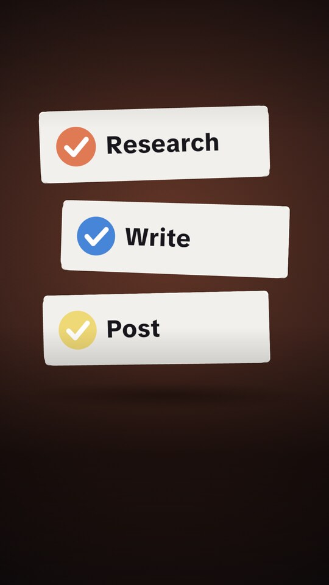
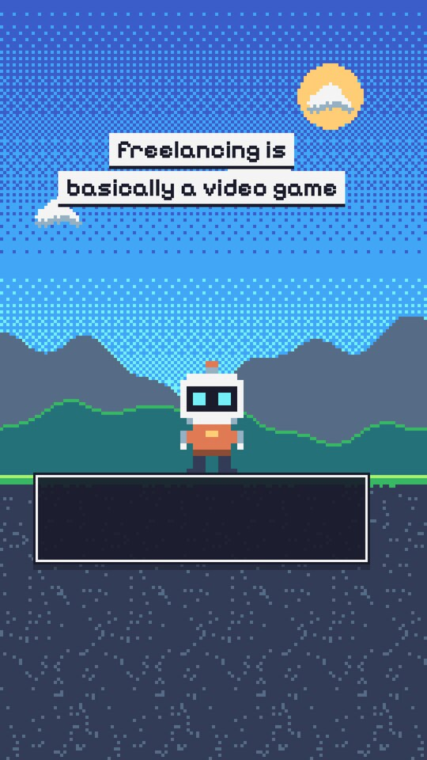

One plugin for Claude Code. Now it edits
real video
.
skills/
Plain
SKILL.md
files. Each reads your
brand-voice.md
first.
competitor-research
A battlecard
SWOT, messaging, and cited sources
seo-brief
Keyword to outline
Intent, meta, and no made-up volumes
content-calendar
A month of posts
Checked against your calendar, no repeats
content-repurposer
One article into a LinkedIn post, an X thread, and a newsletter
ad-copy-generator
Ad variants for Meta, Google, and LinkedIn
email-sequence
A drip campaign with a real arc
email-outreach
Real prospects, never contacted twice
community-post-generator
r/subreddit
Product Hunt
Hacker News
Indie Hackers
dev.to
Discord
Slack
Telegram
GO
NO-GO
A plain answer
before it drafts
.


32 templates
, now in 3D and pixel art.
visual-brief-generator
: prompts for any AI video tool.
NEW
clip-montage · montage-video
your phone videos
your song
your voice
$
node montage.js taco-night.md
1. 0.0–3.6s grill.mp4
own sound, captioned
2. 3.6–6.1s tacos.mp4
best moment, from 0.5s
3. 6.1–9.2s patio.mp4
push-in
sound:
your song, cut on its beat
Free, renders locally
Only photos? They move like a camera.
Ready to send. Here's exactly what's going out.
publish-pipeline
full-pipeline
n8n · Make · APIs
Nothing has been sent yet.
Yes, send the LinkedIn post and newsletter blurb.
Sent · 200 OK
Drafted
Ready for Approval
Approved
Sent
$
claude plugin marketplace add marcosmodly/marketing-skill
$
claude plugin install marketing-skill@marketing-skill
Claude Code
OpenAI Codex
No API keys
github.com/marcosmodly/
marketing-skill
MIT license · 14 skills · Claude Code and Codex